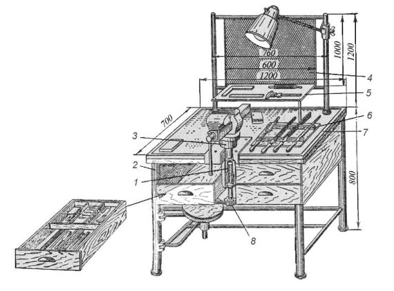
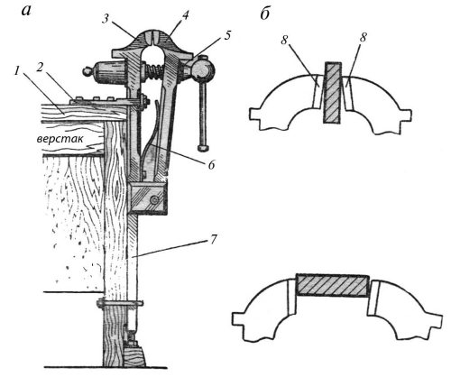
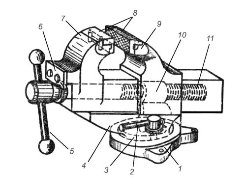
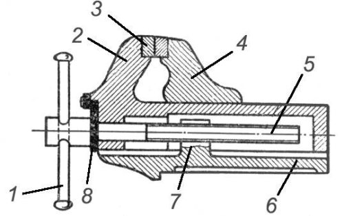
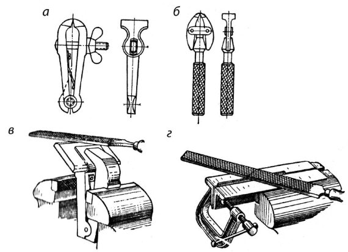

Слесарные тиски.


Слесарные тиски представляют собой зажимные приспособления для удержания обрабатываемой детали в нужном положении. В зависимости от характера работы применяют стуловые, параллельные и ручные тиски.

Рис. 1. Слесарный верстак с регулируемыми по высоте тисками:
1 – винт подъема; 2 – каркас; 3 – труба;
4 – сетка; 5 – полочка; 6 – планшет;
7—рамка; 8 – маховичок
Стуловые тиски получили свое название от способа крепления их на деревянном основании в виде стула, но их можно закрепить и на верстаке. Применяются стуловые тиски в основном для выполнения грубых тяжелых работ, связанных с применением ударной нагрузки, – при рубке, клепке, гибке и пр.
Они состоят из неподвижной 3 и подвижной 4 губок (рис. 2, а). При вращении зажимного винта 5 подвижная губка 4 перемещается и зажимает деталь; при вывинчивании винта 5 под действием пружины 6 подвижная губка отходит и освобождает деталь. Крепление стуловых тисков к верстаку производят планкой (лапками) 2, а для большей их устойчивости неподвижная губка 3 имеет удлиненный стержень 7, который прикрепляется к ножке верстака.
Стуловые тиски отковывают из конструкционной углеродистой стали.
Ширина губок в зависимости от типа и размера стуловых тисков имеет размеры 100, 130, 150, 180 мм, наибольшее раскрытие губок – 90, 130, 150 и 180 мм.
На рабочие части губок наваривается накладка из инструментальной стали или укрепляются на винтах специальные пластины 8 (накладные губки, рис. 2, б). Рабочие поверхности этих пластин насекаются крестообразной насечкой и закаливаются.
Преимуществами стуловых тисков являются простота конструкции и высокая прочность. Недостатком стуловых тисков является то, что рабочие поверхности губок не во всех положениях параллельны друг другу, вследствие чего при зажиме узкие обрабатываемые предметы захватываются только верхними краями губок, а широкие – только нижними (рис. 2, б), что не обеспечивает прочности закрепления. Кроме того, губки тисков при зажиме врезаются в деталь, образуя на ее поверхности вмятины.

Рис. 2. Стуловые тиски: а – общий вид, б – схемы закрепления заготовок
Параллельные слесарные тиски разделяются на поворотные и неповоротные. В этих тисках подвижная губка при вращении винта перемещается, оставаясь параллельной неподвижной губке, отчего тиски и получили название параллельных.
Поворотные параллельные тиски (рис. 3) могут поворачиваться на произвольный угол. Эти тиски в корпусе неподвижной губки 9 имеют сквозной прямоугольный вырез, в который помещена гайка 10 зажимного винта. В вырез входит прямоугольный со сквозным отверстием призматический хвостовик подвижной губки 7. Зажимной винт 11, пропущенный через отверстие корпуса подвижной губки, закреплен стопорной планкой 6. При вращении зажимного винта в ту или другую сторону при помощи рычага 5 винт будет ввинчиваться в гайку 10 или вывинчиваться из нее и соответственно перемещать подвижную губку 7, которая, приближаясь к неподвижной губке 9, будет зажимать обрабатываемый предмет, а удаляясь, освобождать.
Неподвижная губка тисков соединена с основанием 3 центровым болтом, вокруг которого и осуществляется необходимый поворот тисков. Поворотную часть 4 тисков закрепляют в требуемом положении при помощи рукоятки 2 болтом 1.
Корпус параллельных слесарных тисков изготовляют из серого чугуна. Для увеличения срока службы тисков к рабочим частям губок прикрепляют винтами стальные (из инструментальной стали) призматические губки 8 с крестообразной насечкой. При зажиме в тисках на обрабатываемых предметах могут появляться вмятины от насечки закаленных пластин губок. Поэтому для зажима обработанной чистовой поверхности детали (изделия) рабочие части губок тисков закрывают накладными пластинками («нагубниками»), изготовленными из мягкой стали, латуни или алюминия.

Рис. 3. Поворотные параллельные тиски:
1 – болт; 2 – рукоятка; 3 – основание;
4 – поворотная часть; 5 – рычаг; 6 – стопорная планка;
7 – подвижная губка; 8 – пластинки;
9 – неподвижная губка; 10 – гайка; 11 – винт
Размеры слесарных тисков определяются шириной их губок, которая составляет для поворотных тисков 80, 100, 120 и 140 мм и раскрытием (разводом) их на 65, 100, 140 и 180 мм.
Неповоротные параллельные тиски (рис. 4) имеют основание 6, с помощью которого они крепятся болтами к крышке верстака, неподвижную 4 и подвижную 2. Для увеличения срока службы рабочие части губок 4 и 2 делают сменными в виде призматических пластинок 3 с крестообразной насечкой из инструментальной стали и прикрепляют к губкам винтами. Подвижная губка 2 перемещается своим хвостовиком в прямоугольном вырезе неподвижной губки 4 вращением винта 5 в гайке 7 при помощи рычага 1. От осевого перемещения в подвижной губке зажимный винт 5 удерживается стопорной планкой 8. Ширина губок неповоротных параллельных тисков составляет 60, 80, 100, 120 и 140 мм, наибольшее раскрытие губок – 45, 65, 100, 140 и 180 мм.

Рис. 4. Неповоротные параллельные тиски:
1 – рычаг; 2 – подвижная губка; 3 – пластинки;
4 – неподвижная губка;
5 – винт; 6 – основание;
7 – гайка; 8 – стопорная планка

Рис. 5. Закрепление деталей в ручных тисках и струбцинах:
а, б – ручные слесарные тиски, в – использование косогубых тисков, г – применение струбцины
Ручные тиски (рис. 5, а) изготавливаются с шириной губок: 36, 40, 50 и 56 мм и раскрытием губок 28, 30, 40, 50 и 55 мм; тип 2 для мелких работ (рис. 5, б) с шириной губок 6, 10 и 16 мм и раскрытием губок 5,5 и 6,5 мм. Иногда форма детали не дает возможности зажать ее в нужном положении, так например, в случае, когда требуется опилить фаску под некоторым углом. В таких случаях применяют косогубые тисочки (рис. 5, в), в которые захватывают деталь и зажимают в губки параллельных тисков. Для удобства одновременной обработки нескольких одинаковых деталей или тонких длинных заготовок применяют специальные струбцины (рис. 5, г).
Ручные тиски изготовляются из качественной конструкционной углеродистой стали марки 45–50; для пружин используют инструментальную углеродистую сталь марки У7 или сталь марки 65Г. Допускается изготовление пружин и из стали марки 60–70.
При работе на тисках следует соблюдать следующие правила:
– перед началом работы осматривать тиски, обращая особое внимание на прочность их крепления к верстаку;
– не выполнять на тисках грубых работ (рубки, правки или гибки) тяжелыми молотками, так как это приводит к быстрому разрушению тисков;
– при креплении деталей в тисках не допускать ударов по рычагу, что может привести к срыву резьбы ходового винта или гайки;
– по окончании работы очищать тиски волосяной щеткой от стружки, грязи и пыли, а направляющие и резьбовые соединения смазывать маслом;
– после окончания работ разводить губки тисков, так как в сжатом состоянии возникают излишние напряжения в соединении винта и гайки.